Je suis un ingénieur travaillant à l'intersection de l'IA appliquée, la science des données et la recherche opérationnelle.
Je possède un diplôme d'ingénieur Arts et Métiers (France) et un master de recherche (MSc.A) de Polytechnique Montréal, où mon mémoire portait sur l'IA pour la réponse aux appels d'offres.
Je construis des outils qui transforment les données désordonnées et réelles en décisions : agents LLM, pipelines de récupération, modèles de classement et méthodes d'optimisation. J'aime comprendre chaque couche de ce que je construis.
Projets
Data science
Dans les services de gardiennage et de patrouille, presque tous les contrats se gagnent par appel d'offres public ; pourtant, les soumissions étaient chiffrées de mémoire alors que le marché publie presque tout ce qu'il faut pour faire mieux. Pour ma maîtrise à Polytechnique Montréal, avec une entreprise québécoise de premier plan en services de sécurité, j'ai conçu, développé et évalué un outil d'aide à la décision de bout en bout : il repère l'appel d'offres, lit son devis de 100 à 200 pages, retrouve les contrats passés comparables et recommande la marge la plus élevée qui permet encore de gagner.
01 — Fonctionnement
Cinq modules autour d'une base de données partagée
Chaque module lit ou écrit dans une base unique couvrant janvier 2015 à mars 2026. Les modules sont enchaînés : une erreur d'extraction se propage jusqu'au prix recommandé, c'est pourquoi chacun est validé séparément.
01
Surveiller
Extraire les données du système électronique d'appel d'offres du Québec (SEAO) et relier chaque nouvel appel d'offres à ses versions passées par résolution d'entités, pour repérer les renouvellements avant leur annonce.
02
Lire
Un RAG hiérarchique et un LLM local transforment le PDF du devis en exigences structurées (uniformes, équipements, véhicules), puis en scores en dollars.
03
Comparer
Un score de similarité dont les poids sont appris à partir d'environ 300 classements réalisés par un expert en soumissions.
04
Chiffrer
Classer une grille de marges candidates au lieu d'en prédire une seule par régression, pour que le modèle optimise ce qui compte pour l'entreprise.
05
Afficher
Une application Streamlit pour les responsables des soumissions : opportunités, analyse des contrats, profils des concurrents et marge recommandée.
Le pipeline d'extraction (module 2). La structure du document est conservée lors de la segmentation, la recherche est lexicale et spécialisée, et le LLM répond dans un schéma JSON fixe ; un dictionnaire de coûts transforme ensuite le texte en nombres comparables.
02 — Compétences
LLM et RAG. Recherche hiérarchique dans des PDF de contrats : analyse de la mise en page avec PyMuPDF, segmentation par section, BM25 avec un vocabulaire propre à la sécurité, et extraction JSON contrainte par schéma par un LLM quantifié local (Ministral-3-14B), pour que les documents confidentiels ne quittent jamais l'entreprise.
Apprentissage à partir de retours humains. Un petit réseau de neurones entraîné avec une perte par paires RankNet sur des classements d'experts, pour apprendre ce que signifie « contrat comparable ».
Learning to Rank. La fixation du prix reformulée comme le classement de marges candidates avec XGBRanker (objectif par paires, NDCG), mieux adapté que la régression à une perte métier asymétrique et à un petit volume de données.
TALN et résolution d'entités. Appariement spaCy avec un dictionnaire de coûts ; Levenshtein et SequenceMatcher pour relier des contrats rédigés différemment à chaque fois.
Ingénierie des données et déploiement. Extraction web avec Selenium, une base de données partagée, Streamlit, Docker sur Azure (ADLS Gen2).
Recherche appliquée. Design Research Methodology, refonte des processus en BPMN avec les responsables des soumissions du partenaire, évaluation chronologique sans fuite de données.
03 — Résultats
87 % de précision / 98 % de rappel pour l'extraction RAG, sur 50 contrats annotés.
92 % de concordance pour relier 60 appels d'offres de 2025 à leurs contrats passés.
Taux de victoire de 40 % contre 15 % pour les prix fixés par l'entreprise, et 3,52 M$ contre 2,17 M$ de gains projetés (+62 %), en leave-one-out chronologique sur 54 appels d'offres.
Sur une seconde série de 57 appels d'offres, classé premier dans 59 % des cas et dans le top trois dans 83 %.
Même taux de victoire, deux fois plus d'argent. La régression gagne aussi souvent que le modèle de classement, mais minimiser l'erreur tire chaque soumission vers le bas ; le classement préserve la marge.
Surveillance. Appels d'offres en cours et renouvellements à venir ; un clic ouvre l'analyse.
Analyse de contrat. Versions passées, contrats similaires et vue du marché aboutissant à une marge recommandée.
Publié sous la référence E. Salaun, M. Belmouadden, R. Pellerin, A. Neumann, C. Vasseur, « Leveraging artificial intelligence and strategic data for tender response processes », CENTERIS 2026, Procedia Computer Science, Elsevier. Polytechnique Montréal et CIRRELT, avec les Commissionnaires du Québec ; financé par Mitacs. Les résultats sont rétrospectifs et portent sur un petit jeu de données, et chaque recommandation est revue par un expert. Les données contractuelles sont confidentielles ; les figures ont été redessinées pour cette page.
Un agent qui apprend par essais et erreurs peut-il piloter un avion de chasse aussi bien qu'un pilote automatique réglé à la main ? Un agent entraîné sur une physique fausse apprend à en exploiter les bogues ; le projet est donc divisé en deux : jetfighter-sim, un simulateur de vol de F-16 écrit à partir de la physique et validé sur des données publiées, et jetfighter-rl, qui le transforme en environnement d'apprentissage par renforcement et entraîne des agents sur un curriculum de manœuvres, chacune évaluée face au pilote automatique classique.
01 — Fonctionnement
Un curriculum, du plus simple au plus réaliste
L'agent pilote d'abord à travers les commandes de vol électriques (il commande le facteur de charge, le taux de roulis et la poussée) sur un avion simplifié et rapide à simuler, puis sur le modèle complet de corps rigide, et enfin actionne lui-même les gouvernes. Chaque tâche définit ses propres observations, ses termes de récompense et son critère de réussite.
Tâche
Critère de réussite
Revenir ailes à plat depuis une attitude inhabituelle
à plat en moins de 10 s
Atteindre un cap, une altitude et une vitesse
à 30 m / 3° / 5 m/s près, dépassement limité
Virer au meilleur taux soutenable
≥ 90 % de l'optimum, sans perte d'énergie
Passer par 4 points de cheminement 3D aléatoires
les 4 atteints
Looping, tonneau, Immelmann, Split-S
figure accomplie, bon cap de sortie
02 — Compétences
Apprentissage par renforcement. PPO (Stable-Baselines3, PyTorch) sur un environnement Gymnasium sur mesure, avec apprentissage par curriculum et façonnage de la récompense à partir de termes nommés et journalisés séparément.
Apprentissage par imitation. Clonage comportemental avec bruit DART et préchauffage du critique, nécessaire là où le RL pur ne trouve jamais une manœuvre de 20 secondes comme un looping.
Apprentissage par transfert. Les politiques entraînées sur l'avion simplifié sont copiées dans le modèle complet puis affinées (20 % → 100 % de réussite).
Conception d'environnement. Des observations sans discontinuités (direction de la gravité au lieu des angles d'Euler), une action neutre qui maintient la trajectoire, et trois horloges par pas (physique à 100 Hz, commandes de vol électriques à 50 Hz, agent à 10 Hz).
Simulation et commande. Corps rigide à 6 DDL sur des données de soufflerie de la NASA, quaternions et RK4, commandes de vol électriques à gains séquencés, pilote automatique en cascade, LQR ; 596 tests par rapport à des solutions analytiques et à des données publiées du F-16.
03 — Résultats
Avec les commandes de vol électriques, les agents égalent ou dépassent le pilote automatique sur les 5 tâches, jusqu'à 61 % de retour en plus, avec 90 à 100 % de réussite ; un parcours de 4 points de cheminement est effectué en 79 s contre 135 s.
Voltige apprise par imitation puis par PPO : 100 % de réussite, légèrement mieux que le pilote scripté dont elle a été apprise.
Sans commandes de vol électriques, en actionnant directement les gouvernes : 90 à 100 % de réussite sans sortie du domaine de vol, à 72–84 % du retour des agents qui passent par les commandes de vol électriques.
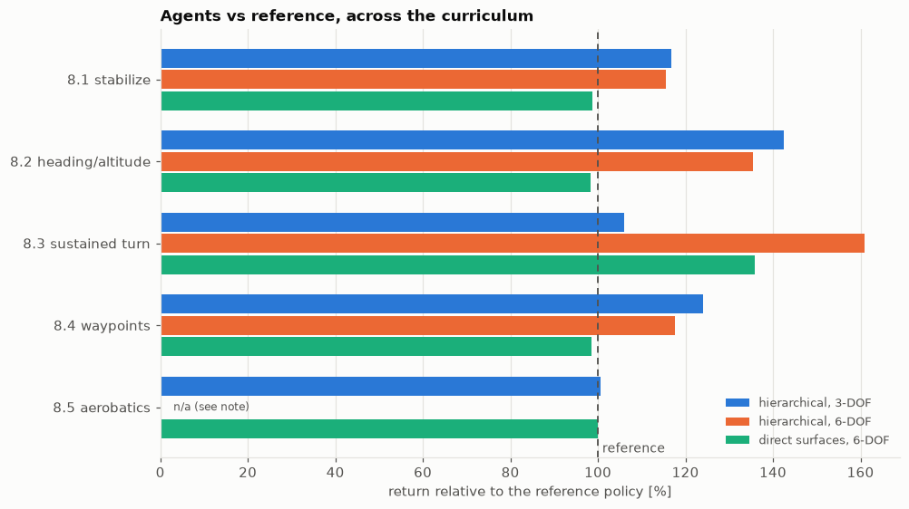
Retour rapporté à la référence, une graine par agent. 100 % signifie égaler le pilote automatique ou le pilote scripté sur les mêmes épisodes d'évaluation. L'agent de voltige hiérarchique 6 DDL a été entraîné avant la correction d'un reward hack ; il n'est pas présenté.
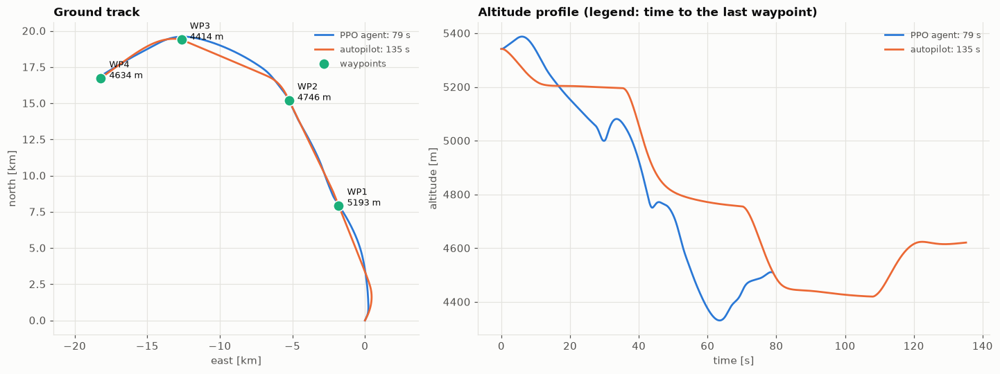
Même parcours, même avion. L'agent anticipe chaque virage et échange librement de l'altitude ; le pilote automatique vise un point de cheminement à la fois.
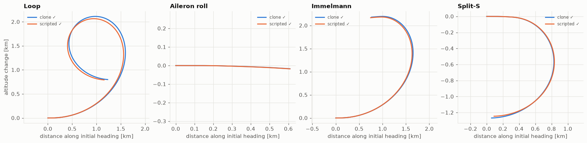
Un réseau qui n'a jamais été récompensé, en pleine voltige. Looping, tonneau, Immelmann et Split-S par la politique clonée, face au pilote scripté dont elle a appris.
Cinq reward hacks, aucun visible sur les courbes d'apprentissage
En rejouant les vols, on a vu des agents virer 2,5 fois plus vite que l'optimum dans une spirale descendante qui perdait 3 km, simuler un looping par un tortillement de 6 secondes, ou s'écraser tôt pour ne plus payer de pénalités. Chaque cas a été corrigé dans la récompense ; c'est pourquoi les vols ont été vérifiés visuellement, et pas seulement sur les métriques.
Projet personnel. Les résultats correspondent au meilleur modèle évalué de chaque expérience, sur une seule graine ; davantage de graines est la prochaine étape évidente.
Les mêmes quelques principes (une somme pondérée, la dérivation en chaîne, l'attention, une fonction de perte, une boucle de rétroaction) suffisent pour aller du premier neurone artificiel aux agents fondés sur les modèles de langage d'aujourd'hui. Ce projet le démontre en construisant chaque étape à la main, dans 27 notebooks qui ajoutent chacun une idée, l'implémentent, la vérifient par rapport à une bibliothèque de référence et seulement ensuite utilisent cette bibliothèque. Tout tourne sur un MacBook Air M5, et chaque notebook est enregistré avec ses sorties : on peut donc le lire sur GitHub sans rien exécuter.
1,93perte sur TinyStories d'un GPT de 18 M de paramètres entraîné en 14 min, contre 2,63 pour GPT-2
3,2 → 91,5 %multiplication à 3 chiffres × 2 chiffres, même petit Transformer, sans puis avec chaîne de pensée
4 → 6 sur 8bogues corrigés par un agent de programmation une fois que le harnais exécute les tests au lieu de faire confiance au modèle
01 — Fonctionnement
Le construire, le vérifier, puis utiliser la bibliothèque
La rétropropagation est dérivée à la main avant d'écrire un moteur autograd ; ce moteur est vérifié par rapport à PyTorch avant d'utiliser PyTorch. L'attention vient avant nn.MultiheadAttention, un GPT avant celui de Hugging Face, LoRA avant peft, PPO avant toute bibliothèque de RL, une boucle d'agent avant tout framework et un serveur MCP avant le SDK officiel. Les modules suivants importent les précédents : l'agent de programmation du module 24 s'appuie sur la boucle d'agent du 22, qui réutilise le gabarit de conversation du 19, lequel affine le GPT du 14.
00 – 07
Comment les réseaux apprennent
Un vérificateur de gradient numérique, le perceptron et la raison pour laquelle XOR le met en échec, une régression softmax sur MNIST en NumPy pur, un MLP dérivé à la main, un moteur autograd scalaire puis tensoriel, les optimiseurs de SGD à AdamW, et un petit ResNet sur CIFAR-10.
08 – 16
Langage et Transformers
Les n-grammes et la perplexité, word2vec, les LSTM, l'attention, un tokenizer BPE comparé à celui de GPT-2, un Transformer jusqu'à RoPE, un GPT qui charge les poids GPT-2 d'OpenAI, un balayage de lois d'échelle, un cache KV, un mélange d'experts, ainsi qu'un petit ViT et un petit CLIP.
17 – 21
Apprentissage par renforcement et post-entraînement
Q-learning, DQN, REINFORCE et PPO jusqu'à LunarLander ; puis GPT-2 affiné en chatbot (entièrement et avec LoRA), un modèle de récompense, best-of-N et DPO, et GRPO avec des récompenses vérifiables sur de l'arithmétique.
22 – 26
Les agents et la route vers l'AGI
Une boucle d'agent qui utilise des outils, sans framework, une recherche BM25 et par embeddings dans les notebooks du projet lui-même, un agent de programmation et MCP construits de zéro, un harnais d'évaluation, un test de complaisance, un autoencodeur parcimonieux, et des problèmes ouverts mesurés (apprentissage continu, ARC).
02 — Compétences
Fondamentaux du deep learning. Rétropropagation, initialisation, normalisation, connexions résiduelles et optimiseurs implémentés à la main et vérifiés avec un vérificateur de gradient.
Transformers et LLM. Un GPT écrit de zéro qui reproduit les logits du GPT-2 de Hugging Face, ainsi que les lois d'échelle, la précision mixte, un cache KV et le softmax en ligne de FlashAttention.
Post-entraînement. SFT, LoRA, modèles de récompense, DPO et GRPO, sur des modèles assez petits pour être entraînés sur un ordinateur portable.
Apprentissage par renforcement. Itération sur les valeurs, DQN, REINFORCE, GAE et PPO, avec les ablations qui montrent à quoi sert chaque ingrédient.
Agents LLM. Appel de fonctions, RAG, mémoire à long terme, un agent de programmation ainsi qu'un client et un serveur MCP, sur un modèle ouvert de 4 milliards de paramètres (Qwen3-4B).
Évaluation et interprétabilité. Un harnais de benchmark avec intervalles de confiance, des tests de reward hacking et de complaisance, et un autoencodeur parcimonieux sur notre propre GPT.
03 — Résultats
Chaque chiffre est mesuré dans les notebooks, sur un ordinateur portable. Les notebooks rapportent aussi ce qui n'a pas fonctionné, et pourquoi : DQN sans réseau cible, PPO sans clipping, GRPO avec un taux d'apprentissage trop élevé, des agents qui annoncent des corrections qu'ils n'ont jamais faites.
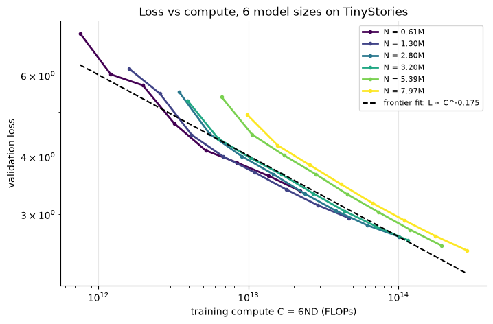
Module 15, une loi d'échelle sur un portable. Six tailles de GPT entraînées sur TinyStories ; la frontière optimale en calcul est une loi de puissance, L ∝ C−0,175, comme chez Kaplan et al.
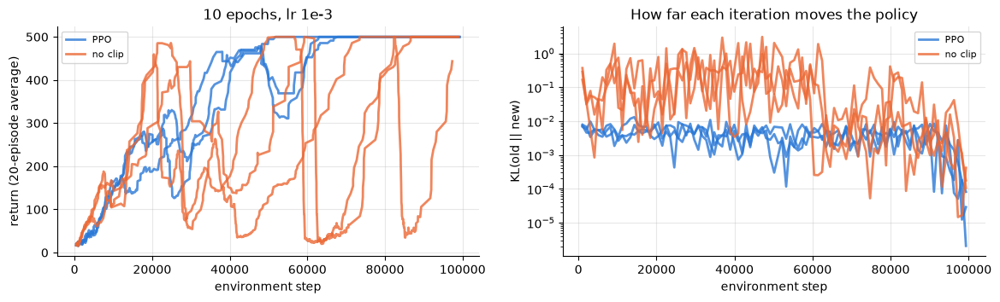
Module 18, pourquoi PPO écrête. CartPole, 10 époques par lot : sans clipping, chaque mise à jour déplace la politique d'un à deux ordres de grandeur plus loin et le retour s'effondre encore et encore.
Résultats choisis. Chaque paire correspond au même modèle, avec et sans une idée.
Module
Sans
Avec
19 · LoRA sur 1,9 % des paramètres
affinage complet, perte 2,077
perte 2,086
21 · Chaîne de pensée, petit Transformer
3,2 %
91,5 %
22 · Outils pour un modèle 4B
1 sur 8
7 sur 8
23 · RAG sur les notebooks du projet
1 sur 16
15 sur 16
24 · Harnais qui exécute les tests
4 bogues sur 8
6 bogues sur 8
PPO construit de zéro fait atterrir LunarLander dans 96 % des nouveaux épisodes.
Interprétabilité. Un autoencodeur parcimonieux trouve une caractéristique « chien » dans notre GPT TinyStories ; l'ajouter pendant la génération met un chien dans chaque histoire.
Principal enseignement : côté agents, chaque gain est venu de la boucle autour du même modèle (outils, recherche, un harnais qui vérifie), pas d'un modèle plus gros.
Projet personnel. Les modèles sont réduits pour tenir sur un portable : une reproduction complète de GPT-2 (124 M) y prendrait plus d'un mois, comme le mesure le module 14. Licence MIT ; les jeux de données et les modèles préentraînés conservent leurs propres licences.
Un modèle de 9 milliards de paramètres exécuté localement (Qwen 3.5 9B dans LM Studio, sur un MacBook Air) peut-il bien jouer à un jeu de stratégie en temps réel ? Pas en regardant 328 000 cases de carte. Cet agent réduit OpenFront à un graphe d'environ 30 joueurs, donne au modèle un court texte décrivant la situation et un menu d'options légales, et le divise en deux rôles : un stratège qui planifie et un commandant qui donne les ordres. Le code fait respecter le plan entre les appels.
01 — Fonctionnement
Le LLM choisit quoi, le code choisit où
Le moteur OpenFront, non modifié, tourne sans interface dans le même processus, et le temps de jeu se met en pause pendant que le modèle réfléchit. Chaque changement devient une phrase (« Queensland started attacking you with 46,040 troops »). Le stratège, appelé toutes les 20 s ou lors d'événements majeurs, reçoit les règles essentielles ainsi que les 6 sections les plus pertinentes parmi les 37 de la base de connaissances, et rédige un plan : priorités, cible principale, réserve de troupes à conserver et taille des vagues d'expansion. Le commandant, appelé uniquement quand quelque chose change, le traduit en au plus deux ordres au format JSON. Le schéma est reconstruit à chaque tour et son enum est la liste courante des identifiants d'options légales : un ordre invalide ne peut donc pas être écrit.
// un vrai tour du commandant pendant la partie gagnante, à 3:15
{
"reason": "Carolinian Republic eliminated; attack Carolinian
Commonwealth to secure west, then build city for
growth. Keep 35% reserve (682,942 troops) ...",
"actions": [
{ "id": "attack_carolinian_commonwealth", "troops_percent": 30 },
{ "id": "build_city", "troops_percent": 0 }
]
}
02 — Compétences
Conception d'agents LLM. Séparation planificateur/exécutant, appels déclenchés par les événements, et une auto-vérification qui renvoie une fois, chiffres à l'appui, une réponse qui enfreint les règles.
Sortie structurée. Un schéma JSON dont l'enum est le menu des options légales, avec maxLength sur chaque champ texte pour qu'une réponse ne puisse jamais être coupée au milieu du JSON.
Recherche sans embeddings. 37 sections de connaissances étiquetées ; la situation en sélectionne 6, de façon déterministe, et chaque section factuelle est vérifiée par un test sur le vrai moteur.
Abstraction de l'état. 328 000 cases → un graphe d'environ 30 joueurs (frontières, attaques, alliances) → un court texte sur lequel un modèle 9B peut raisonner.
Intégration d'une grosse base de code. Le moteur OpenFront à un commit figé, récupéré par sparse checkout (7 Mo au lieu de 1,3 Go).
Évaluation et reproductibilité. Des références scriptées sur la même graine, des reproductions hors ligne des échecs sans le LLM, chaque prompt et chaque réponse journalisés dans turns.jsonl, et 39 tests Vitest, dont une partie complète avec un LLM simulé qui joue une partie de 30 minutes en quelques secondes.
03 — Résultats
Sur la carte de l'Australie, face à 7 nations IA et 20 tribus (Facile, graine australia-1), le LLM a gagné la partie après 8 min 49 s avec 80,9 % du territoire, classé premier dès la première minute. 130 appels au LLM (29 au stratège, 101 au commandant), 0 erreur, 8,0 s de latence moyenne, aucune API cloud.
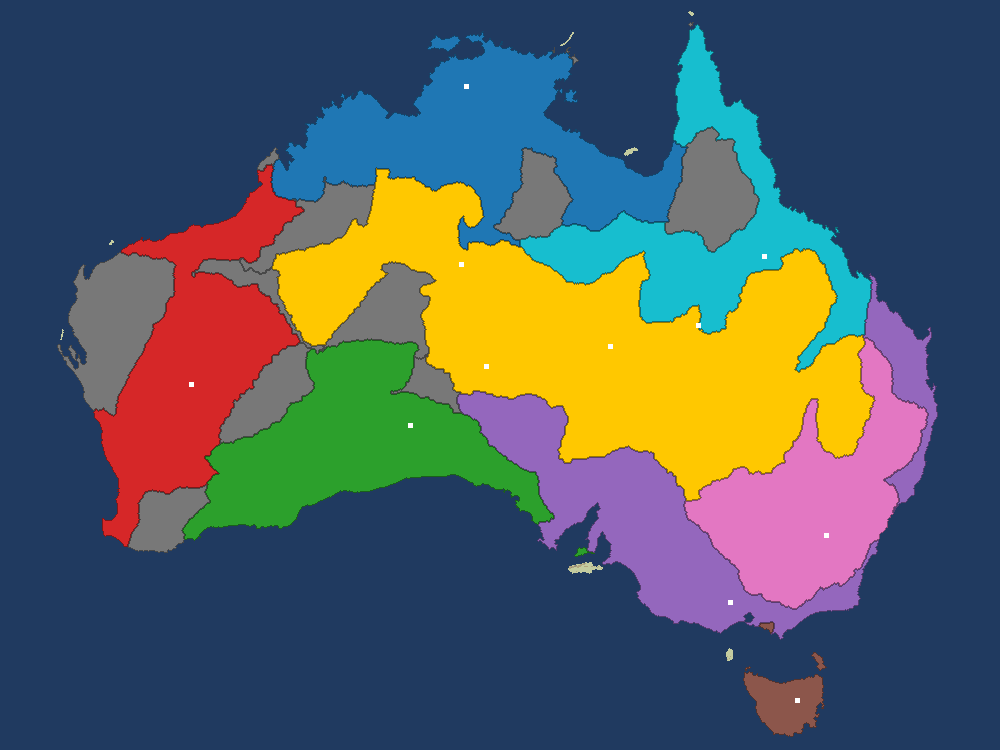
Minute 3, 37,8 % du territoire. Le LLM (en or) est apparu dans les plaines centrales, comme le conseille la base de connaissances, a absorbé les tribus autour de lui et s'est allié à ses voisins.
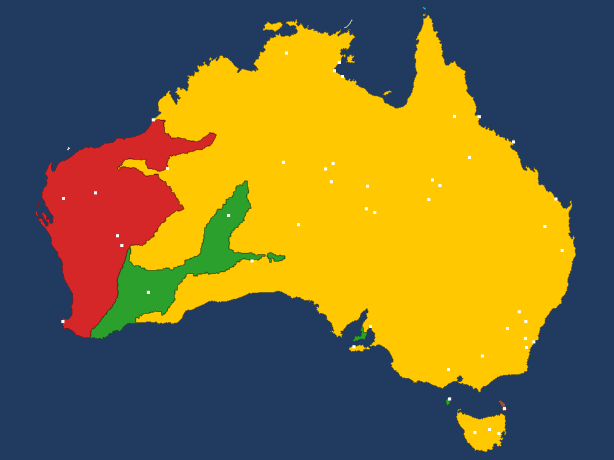
8:49, 80,9 %, le jeu déclare le LLM vainqueur. Une fois ses alliances expirées, Victoria et la Nouvelle-Galles du Sud sont tombées, puis le Queensland.
Itérations à partir des journaux, sur la même graine. Chaque échec a été diagnostiqué en lisant turns.jsonl et corrigé dans l'interface ou dans le code.
Version
Niveau
Résultat
Joueurs scriptés, sans LLM
Moyen
pic à 5,8 %, éliminé à 6:21
Stratège + commandant, le LLM contrôle chaque troupe
Moyen
pic à 10,2 %, éliminé à 3:50
Même modèle, le code impose la réserve et les vagues
Moyen, 3 min
24,1 %, 1er sur 11
Même agent, partie complète
Facile
victoire à 8:49, 80,9 %
« Envoyer des troupes pour défendre. » Le modèle continuait d'attaquer une nation plus forte « pour se défendre », faisant fondre son armée de 111 000 à 27 000 troupes. Dans OpenFront, les troupes gardées chez soi sont la défense : une règle essentielle le dit désormais, et chaque option d'attaque affiche le rapport de forces à côté de son identifiant.
Plus rapide ne veut pas dire plus réactif. Une cadence de 1 s répétait « s'étendre de 30 % » et vidait l'armée en 10 s ; un script sans LLM a reproduit le problème. Un budget de troupes par tranche de 5 s et une réserve choisie par le plan ont fait passer la même cadence de l'élimination à la première place.
Principal enseignement : l'essentiel de l'amélioration est venu de l'interface (formulation, menu, schéma, règles de troupes), pas du modèle.
Projet personnel. Limites : la partie gagnante était en mode Facile et sur une seule graine ; des exécutions sur plusieurs graines et des ablations (sans base de connaissances, sans règles de troupes) sont la prochaine étape. AGPL-3.0 ; indépendant d'OpenFront.
« Quels bâtiments autour de l'oratoire Saint-Joseph dépassent 20 m ? » Répondre à cette question à partir de LiDAR aéroporté demande une chaîne d'étapes SIG et d'apprentissage automatique sur 127 millions de points. Ce projet place un agent LLM devant cette chaîne avec une règle : le LLM planifie et explique, il ne calcule jamais. Chaque chiffre provient d'un outil déterministe, et un validateur vérifie chaque résultat avant que le LLM le voie.
01 — Fonctionnement
Trois nœuds, sept outils, un validateur
L'agent est une machine à états LangGraph. Le nœud agent est un simple appel à l'API Claude qui choisit l'outil suivant ; tools exécute des fonctions Python typées ; validator applique des règles physiques et géométriques (sans LLM) et renvoie les erreurs avec leurs causes probables et une correction suggérée, avec au plus deux nouvelles tentatives. Les outils s'échangent des chemins de fichiers : chaque résultat intermédiaire est mis en cache et peut être ouvert dans QGIS, et une question de suivi réutilise les fichiers précédents au lieu de tout recommencer.
Les outils, dans l'ordre du plan standard.
Outil
Renvoie
find_lidar_tiles
l'emprise et la densité des tuiles
load_point_cloud
la zone demandée, découpée dans les tuiles
normalize_height
la hauteur au-dessus du sol et un modèle de terrain
classify_lidar_points
une classe pour chaque point
extract_buildings
les emprises avec hauteurs et surfaces (GeoJSON)
filter_buildings
les bâtiments dans une plage de hauteurs
create_map
une carte interactive
Une question et sa question de suivi (faites défiler dans le cadre), avec la trace en direct de chaque appel d'outil. La question de suivi prend 3 étapes au lieu de 7, car elle réutilise le fichier des bâtiments de la première réponse.
02 — Compétences
Agents LLM et utilisation d'outils. Appel de fonctions Claude orchestré par LangGraph ; un décorateur de 80 lignes transforme les annotations de type en schémas JSON et valide les arguments avec pydantic.
Garde-fous. Un validateur à base de règles entre les outils et le LLM, qui vérifie chaque bâtiment d'un résultat et pas seulement ceux que voit le LLM, ainsi qu'un planificateur hors ligne quand aucune clé d'API n'est disponible.
Apprentissage automatique sur données 3D. Un classifieur de points Random Forest avec des descripteurs géométriques (linéarité, planarité, dispersion, verticalité) issus de la covariance locale ; évaluation avec séparation spatiale, pour que les points de test ne soient jamais voisins des points d'entraînement.
SIG. Normalisation du terrain, morphologie raster et emprises vectorisées avec GeoPandas et rasterio ; cartes Folium et vue 3D dans Streamlit.
Tests de systèmes LLM. 25 tests s'exécutent sans clé d'API : de faux LLM scriptés pilotent le vrai graphe, les vrais outils et le vrai validateur.
03 — Résultats
F1 de 0,914 sur les bâtiments (0,880 sans les descripteurs géométriques), exactitude de 0,929, sur 480 000 points mis de côté.
Bâtiments trouvés à partir des classes prédites, comparés à la classification professionnelle du fournisseur : 36 / 36 appariés, écart de hauteur médian de 0,04 m, IoU des emprises de 0,944.
Environ 35 s des tuiles brutes à la carte pour une zone de 500 m × 500 m, sur un ordinateur portable.
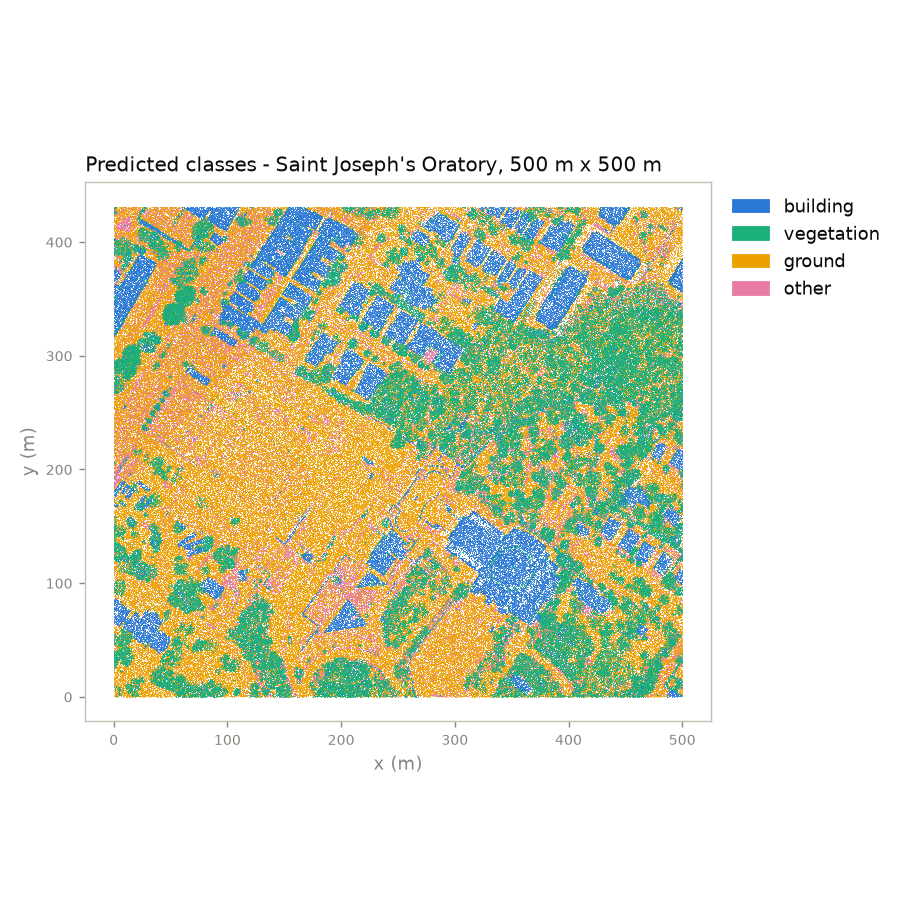
Classes prédites autour de l'Oratoire. Toits, canopée et sol dégagé forment des zones cohérentes.
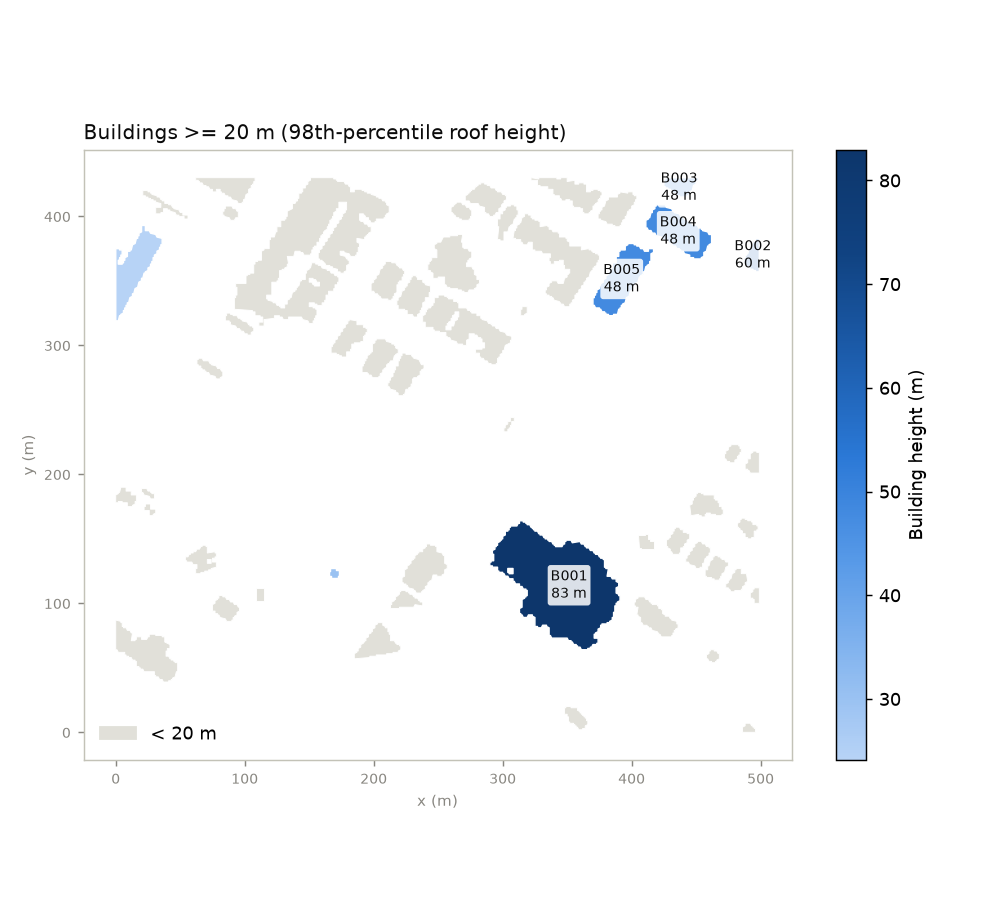
Bâtiments d'au moins 20 m autour de l'Oratoire. La basilique (B001) a une hauteur de toit de 83 m et un point culminant à 106 m.
Projet personnel. Limites connues : les bâtiments contigus fusionnent en une seule emprise, les étiquettes d'entraînement de la végétation sont dérivées par règles, et la limite de 150 m du validateur doit être relevée pour le centre-ville de Montréal.
Le Québec publie chaque appel d'offres public, chaque soumission et chaque adjudication en données ouvertes, mais sous forme de JSON imbriqué de plusieurs gigaoctets, incapable de répondre à une question simple. Ce projet transforme ce flux en une base SQLite prête à interroger et l'expose à Claude ou à ChatGPT par un serveur MCP en lecture seule. L'objectif n'est pas de donner au modèle un accès SQL, ce que fait déjà un serveur générique, mais de lui donner le bon SQL, intégré dans des outils, pour les questions où la requête évidente renvoie un chiffre plausible mais faux.
01 — Fonctionnement
Trois scripts de construction, un serveur, neuf outils
Trois scripts idempotents téléchargent, filtrent et normalisent le flux en 18 tables et 5 vues, avec un index plein texte insensible aux accents et un dictionnaire de données stocké dans la base elle-même. Un serveur FastMCP propose ensuite six outils d'analyse préconçus pour les questions où l'exactitude compte, et trois outils flexibles (describe_schema, search_processes, run_sql) pour tout le reste.
Neuf outils, une seule porte. Chaque question va soit vers un outil préconçu, soit vers le noyau flexible, par la même connexion en lecture seule.
Trois pièges dans lesquels tombe un modèle qui écrit son propre SQL, et que les outils gèrent à sa place.
Piège
Ce qui se passe mal
Comment les outils le gèrent
Identité du fournisseur
Une entreprise, de nombreuses graphies : Garda compte à elle seule 9 entités juridiques sous 6 noms
Les noms sont résolus vers tous leurs numéros d'entreprise avant l'agrégation
Victoire et défaite
Non stockées ; compter les lignes de soumission compte les lots en double
Déduites de l'appartenance à l'adjudication, comptées par appel d'offres
Contrats de gré à gré
Aucune soumission : une entreprise qui reçoit 3 contrats obtient donc 100 %
Exclus des taux de victoire, toujours rapportés à côté
02 — Compétences
Conception d'outils pour LLM (MCP). Des outils conçus à rebours, à partir des questions des analystes ; ils renvoient de courts rapports dans le vocabulaire de l'analyste plutôt que des lignes brutes, et les instructions transmises à la connexion du serveur donnent au modèle les règles sur les données avant son premier appel.
Garde-fous pour LLM.run_sql est en lecture seule par construction plutôt que par consigne : une connexion à la base en lecture seule, une seule instruction SELECT avec une liste noire de commandes d'écriture, un plafond de 2 000 lignes et un délai de 5 secondes.
Modélisation des données. Les publications imbriquées Open Contracting (OCDS) normalisées en un schéma relationnel, avec résolution d'entités des fournisseurs.
Ingénierie des données. Un téléchargement incrémental, un filtre qu'on peut réorienter vers un autre secteur en modifiant deux listes, un normaliseur qui n'utilise que la bibliothèque standard.
03 — Résultats
Une question en langage naturel comme « Le taux de victoire de Garda sur les appels d'offres ouverts ? » devient un seul appel d'outil. Le serveur fonctionne dans Claude Code et Claude Desktop, et dans ChatGPT par l'intermédiaire d'un proxy. Un test de fumée appelle les neuf outils avec les exemples de questions du README, dont un DELETE qui doit être refusé. Ci-dessous, une requête de trois mots produit une analyse complète d'un concurrent dans laquelle chaque chiffre provient d'un appel d'outil.
« Analyse charco industries » (faites défiler dans le cadre) : chiffres clés, historique des contrats, taux de victoire par année et rivaux les plus fréquents, puis la lecture qu'en fait Claude.
Outil open source, licence MIT. Données : données ouvertes du SEAO (OCDS) via open.canada.ca, services de sécurité uniquement ; la couverture est concentrée sur 2021–2025, les chiffres sont donc indicatifs.
Lors d'un gala étudiant de 3 000 invités, le stock des bars était suivi à coups de bâtonnets et d'estimations. J'ai conçu et déployé un système connecté : un pavé de boutons ESP32 à chaque bar enregistre chaque vente, les données arrivent en temps réel dans une feuille Google Sheets partagée grâce à la 4G, et une prévision légère avertit environ 30 minutes avant qu'un bar soit à court, soit le temps qu'il faut à un coursier pour le réapprovisionner.
01 — Fonctionnement
Chaque appui sur un bouton est horodaté et mis en file d'attente sur l'appareil, puis publié en MQTT par un routeur 4G privé, indépendant du wifi du lieu. Un pont logiciel ajoute une ligne par vente à la feuille Google Sheets en supprimant les doublons par numéro de séquence, et la prévision lit cette même feuille.
Une boucle, refermée à la réserve. La colonne de gauche est la seule partie qui se trouve sur place ; tout ce qui est à droite de la liaison 4G est hors site, ce qui permet à la feuille de survivre à une coupure de courant dans un bar ou à un appareil débranché en pleine soirée.
02 — Compétences
Embarqué et IoT. Micrologiciel ESP32 en C++, une matrice de boutons et une file d'attente locale pour que le barman n'attende jamais le réseau.
Messagerie fiable. MQTT sur 4G avec numéros de séquence, pour qu'un appareil puisse renvoyer librement ses messages après une reconnexion sans gonfler les ventes.
Prévision en temps réel. Le profil de consommation de l'année précédente, ajusté selon le moment de la soirée et l'emplacement du bar, recalé sur les ventes en direct ; l'alerte se déclenche quand le temps projeté avant épuisement atteint le temps de réapprovisionnement.
Conception centrée sur l'utilisateur. Une feuille Google Sheets comme tableau de bord, parce que toute l'équipe l'avait déjà sur son téléphone.
03 — Résultats
Utilisé pendant une soirée dans plusieurs bars et pour 3 000 invités, avec des alertes de rupture environ 30 minutes à l'avance. La soirée se termine avec un enregistrement à la seconde de ce qui a été vendu et où, sur lequel est ajustée la prévision de l'année suivante.
Un bar, une soirée, reconstitués pour cette page. La courbe en tirets est l'a priori, la courbe pleine ce que disent réellement les appuis sur les boutons, et l'alerte n'est pas déclenchée quand le stock est bas, mais quand le temps projeté avant épuisement tombe à la durée de l'aller-retour du coursier.
Conçu pour un gala étudiant, 2023. Le micrologiciel, le pont et la feuille de prévision ont été écrits pour l'événement et ne sont pas publics ; les figures sont redessinées à partir des journaux de la soirée.
Avec un budget limité, où placer caméras et radars pour protéger un site ? La réponse classique maximise la couverture. Ce projet montre que la couverture n'est pas le bon objectif et la remplace, en trois étapes, par la question que se pose réellement un ingénieur en sécurité : un intrus qui connaît le dispositif sera-t-il détecté à temps ? Tout repose sur un modèle 3D construit à partir du LiDAR aéroporté du gouvernement du Québec (le site lui-même est fictif).
Question
Métrique
Ce qu'elle peut masquer
Le site est-il couvert ?
couverture pondérée
le pire cas
L'intrus sera-t-il détecté ?
détection sur le corridor le moins surveillé
un corridor aveugle derrière une forte couverture
Détecté à temps ?
seules les détections antérieures à l'intervention
rien : c'est la métrique de conception
01 — Fonctionnement
modèle 3D
Les tuiles LiDAR (30 points/m²) sont traitées en flux pour produire des rasters de terrain, de bâtiments et de canopée. Les bâtiments sont opaques ; les arbres sont semi-transparents, avec une transparence mesurée à partir du LiDAR lui-même.
visibilité
Un moteur de lancer de rayons exact (numba) calcule ce que voit chaque position candidate, puis les lois de détection des caméras et des radars donnent une matrice de détection pour 2 290 configurations de capteurs.
optimiser
Une heuristique gloutonne comme référence, un MILP avec des coupes générées à la demande qui certifie l'écart à l'optimum de chaque dispositif, et NSGA-II pour le compromis coût / couverture / robustesse.
adversaire
Un intrus trouve le corridor le plus faible ; chaque corridor devient une nouvelle contrainte pour l'optimiseur, jusqu'à ce qu'il n'en reste aucun et que le dispositif soit prouvé optimal.
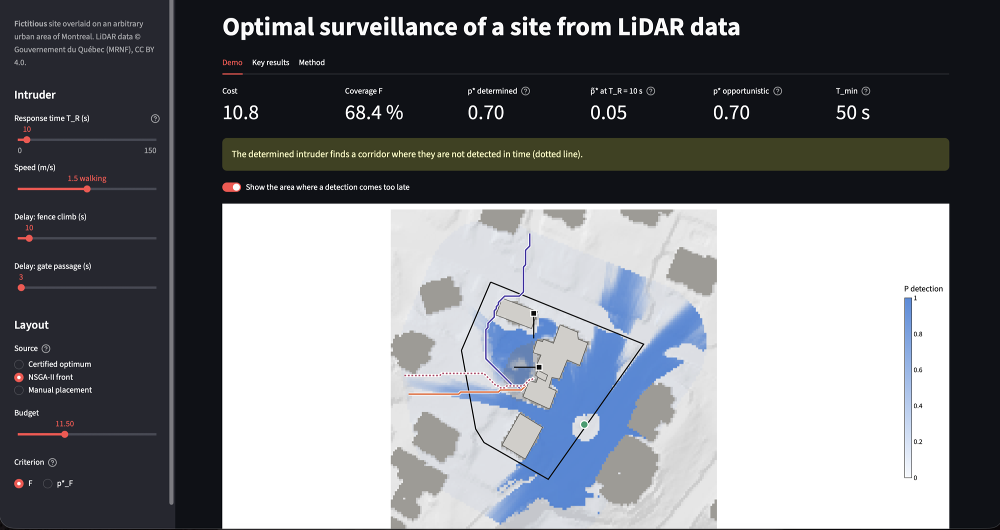
Trois métriques, un dispositif, trois verdicts. 68 % de couverture et 0,70 de détection sur le pire corridor, mais seulement 0,05 de chance de détecter l'intrus à temps avec une intervention en 10 s.
02 — Compétences
Traitement de nuages de points 3D. LiDAR classifié transformé en rasters de terrain, de bâtiments et de végétation à mémoire constante (PDAL, laspy, rasterio), vérifiés par rapport à PDAL et au modèle de terrain officiel.
Géométrie haute performance. Parcours exact des rayons dans un noyau numba, vérifié par rapport à gdal_viewshed ; un arbitre exact a repéré 1 % de cellules marquées à tort comme visibles par la première version, échantillonnée.
Optimisation. Couverture sous-modulaire résolue par un algorithme glouton et par un MILP (HiGHS) avec des coupes générées paresseusement, donnant des bornes certifiées ; recherche multiobjectif avec NSGA-II (pymoo).
Modélisation adverse. Une métrique du pire corridor calculée exactement par percolation (union-find), dans une boucle maître / oracle qui converge avec un certificat.
Deep learning, uniquement là où il est plus rapide. Un U-Net prévu a été évalué puis abandonné là où le moteur exact était déjà plus rapide ; un substitut PyTorch a été conservé pour la visibilité sur toute la zone, avec une augmentation de données exacte par symétrie.
Analyse décisionnelle. Sensibilité mesurée comme un regret décisionnel (feuillage estival, intrus qui court), avec un protocole fixé avant tout calcul.
03 — Résultats
L'heuristique gloutonne perd jusqu'à 15,9 points de couverture pour un budget donné, une perte visible uniquement face à la borne certifiée (optimum prouvé à 0,5 % près pour la plupart des budgets).
Pour une détection à temps avec une intervention en 10 s, le dispositif certifié coûte 6,8 unités contre 12,4 pour le meilleur dispositif trouvé par NSGA-II, qui n'optimise pas le temps.
L'intrusion la plus rapide dure 50 s : avec une intervention plus lente, aucun nombre de capteurs n'y change rien, seul un retard physique (clôture, portails) le peut.
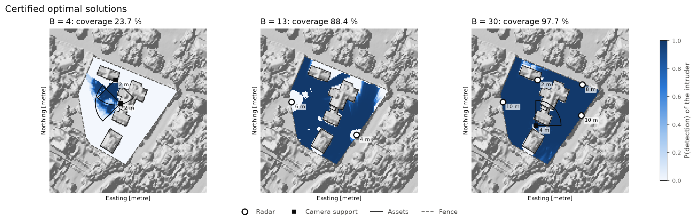
Dispositifs optimaux certifiés. Des caméras pour les petits budgets, puis des radars, avec une caméra couvrant l'ombre des radars.
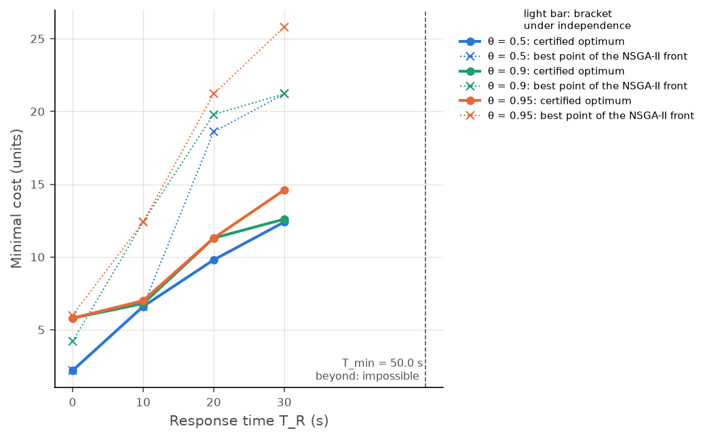
Le prix d'une détection à temps. Optimums certifiés (trait plein) contre le meilleur point NSGA-II satisfaisant la même exigence (pointillés).
Une série de 18 notebooks qui construit une boîte à outils Python unique de gestion des risques, de la mesure des rendements à l'allocation dynamique. Elle commence par l'optimisation de Markowitz et montre pourquoi elle est fragile, puis passe à la question que se pose réellement un investisseur ayant un engagement futur : comment prendre du risque de marché tout en garantissant un plancher. Chaque stratégie est testée sur 5 000 scénarios simulés et sur 28 ans de données du marché américain.
0 %de franchissements du plancher pour l'allocateur à plancher, contre 3,6 % pour 100 % actions
−22 %de perte maximale (drawdown) pour la stratégie contrainte, contre −50 % pour le marché, 1990–2018
0,55de ratio de Sharpe, contre 0,46 pour le marché sur la même période
01 — Fonctionnement
Un moteur d'allocation, plusieurs définitions du plancher
Les stratégies sont écrites comme des fonctions d'allocation branchées sur un moteur de backtest qui ne sait rien d'elles. Le moteur central est le CPPI : à chaque pas, on investit un multiple du coussin au-dessus du plancher dans l'actif risqué et le reste dans l'actif sans risque, de sorte que l'exposition tombe à zéro avant que le plancher soit atteint.
Un moteur, trois définitions du plancher. Les trois fonctions dynamiques partagent exactement cette boucle et ne diffèrent que par la ligne qui met à jour F, ce qui rend le passage du CPPI classique à l'allocation guidée par le passif presque gratuit.
02 — Compétences
Optimisation numérique. Frontière efficiente, portefeuilles de Sharpe maximal et de variance minimale avec SciPy SLSQP sous contraintes, et une démonstration de la façon dont une erreur d'un point sur les rendements espérés envoie l'optimiseur dans un coin.
Monte Carlo et processus stochastiques. Mouvement brownien géométrique vectorisé pour les actions et modèle CIR pour les taux d'intérêt, avec prix d'obligations analytiques ; détection d'un biais d'environ 2 % dans une discrétisation naïve.
Mesure du risque. VaR historique, gaussienne et de Cornish-Fisher, CVaR, drawdown, asymétrie et kurtosis.
Conception de backtests. Stratégies jugées sur leur distribution complète (probabilité et ampleur d'un déficit), et non sur le résultat moyen.
03 — Résultats
L'allocateur à plancher élimine tous les franchissements en ne renonçant qu'à 0,03 de richesse terminale moyenne ; un mélange fixe 70/30 renonce à 0,21 et passe encore sous le plancher sur 0,8 % des trajectoires.
Faire passer le levier de 3 à 10 rapporte 0,02 de richesse espérée et brise la garantie sur 2,8 % des trajectoires : c'est le risque de gap.
Sur données réelles, la stratégie contrainte en drawdown divise par deux la pire perte et améliore le ratio de Sharpe, au prix de 2,2 points de rendement annuel.
5 000 scénarios, 10 ans, richesse terminale par classes. Le mélange fixe achète la sécurité en coupant les deux queues de distribution. L'allocateur à plancher fait tout autre chose : il empile les échecs en un pic juste au-dessus de 0,75 et laisse la queue droite intacte ; son 95e centile et son maximum sont les mêmes que ceux du 100 % actions.
Un projet de semestre pour le programme PERSEUS du CNES à Arts et Métiers : une coiffe de fusée enroulée en fibre de lin sur une machine d'enroulement à quatre axes. Une fibre posée selon une mauvaise trajectoire glisse le long du cône avant que la résine ne durcisse, comme l'ont montré les premiers essais. Ma partie était la chaîne mathématique et logicielle : modéliser la trajectoire de la fibre, simuler tout l'enroulement et générer le programme machine.
3,99ordre de convergence mesuré du solveur RK4 (4 attendu)
26,2708 mmouverture polaire trouvée par le solveur, contre 26,271 mm en forme close
×9,710 597 points de trajectoire compressés en 1 095 blocs G-code, à 0,05 mm près
01 — Fonctionnement
La trajectoire de la fibre est la solution d'une EDO à trois équations construite à partir de la géométrie de la surface et d'un paramètre de frottement. Tout ce qui suit (motif, couverture, axes de la machine, temps de cycle, G-code) est calculé à partir de cette seule trajectoire.
Un modèle, deux consommateurs. Tout ce qui est au-dessus de la ligne relève de la géométrie et de l'EDO ; tout ce qui est en dessous n'est que de la comptabilité sur la solution. La branche couverture et la branche machine lisent la même trajectoire, ce qui permet de transformer directement une exigence de couverture en un motif et un temps de cycle.
02 — Compétences
Modélisation mathématique. Géométrie différentielle du mandrin et un critère de non-glissement qui indique quand le frottement peut maintenir une fibre en place.
Calcul scientifique. Intégration RK4 en abscisse curviligne, qui supprime la singularité de la formulation classique au retournement ; retournements localisés par dichotomie ; une quantité conservée utilisée comme contrôle d'erreur gratuit.
Conception d'algorithmes. L'algèbre des motifs, qui explique pourquoi un circuit supplémentaire peut presque doubler la quantité de fibre utilisée, et une compression du G-code par recherche exponentielle et dichotomique.
Robotique et CN. Cinématique inverse à quatre axes, planification de la vitesse dans les limites des axes, et génération du G-code pour la vraie machine.
03 — Résultats
Explication du glissement et de l'accumulation de fibre observés lors des essais : à la petite extrémité, la trajectoire demandait plus de frottement que ce qui était disponible.
Une recette de conception pour une couche fermée, 30 circuits avec un nombre de motif de 7, prédite par l'algèbre puis confirmée par une simulation qu'elle n'avait jamais vue (couverture de 1,016 pour une cible de 1).
Un programme machine qui tient compte du déport de l'œillet de dépose de la fibre, lequel décalerait sinon la broche jusqu'à 20,9°.
Le mandrin nu. Le profil de coiffe tourné, monté entre les mandrins de serrage du XWinder avant la pose de toute fibre.
Après quelques passes. Les croisements de la mèche de lin forment le motif de bandes que prédit l'algèbre de la section 09, posé sur la vraie surface.
Douze circuits, posés sans s'arrêter. 10,50 m de mèche en 1,4 min. Le chariot, l'œillet de dépose et la longueur libre de mèche entre eux sont simulés avec la trajectoire, puisque l'avance de l'œillet est précisément ce que la cinématique inverse doit résoudre.
Projet de semestre pour le programme CNES/PERSEUS, démonstrateur ASTREOS, à Arts et Métiers. Le rapport du projet couvre aussi les matériaux lin/Elium, la machine et la campagne expérimentale ; cette page couvre les parties mathématique et logicielle.


![L'application Streamlit, thème sombre. La question sur les bâtiments de plus de 20 m autour de l'Oratoire, la trace dépliée « Done in 7 steps », le tableau de réponse avec 7 bâtiments, puis les résultats : 7 bâtiments, moyenne de 48,8 m, maximum de 82,9 m, emprise totale de 9 869 m², une carte satellite avec les emprises en bleu, le tableau des bâtiments avec un téléchargement GeoJSON, et un nuage de points 3D coloré par classe. En dessous, la question de suivi « And above 50 m? » reçoit une réponse en 3 étapes avec 2 bâtiments et une nouvelle carte.](../assets/img/LiDARAgent/streamlit_demo.jpg)
![Une conversation Claude répondant à la requête « Analyse charco industries » avec l'intégration seao : chiffres clés de Charco Industries (19 966 481 $ adjugés, 9 processus et 40 lots remportés, un taux de victoire concurrentiel de 9,8 %, le ministère de la Sécurité publique comme principal acheteur), un historique des contrats remportés, un tableau du taux de victoire par année de 2020 à 2026, un tableau des soumissions concurrentes classant les entreprises rivales selon la fréquence à laquelle elles soumissionnent contre Charco, et une lecture stratégique finale des forces de l'entreprise et de sa faiblesse récente.](../assets/img/MCP/MCP_claude_answer.svg)
![Résumé en une page du système : des terminaux ESP32 à grille de boutons, avec anti-rebond local, publient chaque vente par une liaison 4G en MQTT QoS 1 vers un broker, via un point d'accès privé indépendant du wifi du lieu ; un pont supprime les doublons par appareil et numéro de séquence et ajoute des lignes à une feuille Google Sheets, qui alimente un tableau de réassort envoyant des alertes par bar et par article ; à côté, la prévision de rupture construite à partir de la référence de l'année précédente, d'un multiplicateur par moment de la soirée et d'un poids par emplacement, et un graphique des unités restantes d'un bar au cours d'une soirée, avec l'alerte déclenchée environ trente minutes avant l'épuisement.](../assets/img/CashRegister/resume_connected-cash-register.svg)
![Résumé en une page du dépôt : à gauche, la frontière efficiente calculée par SLSQP sans vente à découvert, avec les actifs individuels et les portefeuilles de variance minimale globale et de ratio de Sharpe maximal ; à droite, les trajectoires de richesse CPPI sur un horizon de dix ans avec un multiplicateur de trois, avec les trajectoires simulées, leur médiane et le plancher ; en dessous, les trois couches de la bibliothèque : des chargeurs qui renvoient des rendements mensuels indexés par PeriodIndex, des moteurs d'optimisation, de mesure du risque et de simulation GBM et CIR, et des backtests qui exécutent le CPPI et des combinaisons d'allocateurs face à trois définitions du plancher.](../assets/img/PortfolioFi/resume_portfolio-optimization.svg)
![Résumé en une page de l'étude : le profil de mandrin en ogive tangente avec son ouverture polaire de 26,27 mm et la relation de Clairaut, un angle de départ de 25 degrés et un paramètre de frottement lambda ; l'équation différentielle ordinaire à trois états en z, thêta et alpha, paramétrée par l'abscisse curviligne et intégrée par un schéma de Runge-Kutta d'ordre quatre par pas d'un demi-millimètre, avec un ordre de convergence de 3,98 à 3,99 et des retournements localisés par dichotomie ; et les cinq étapes de la chaîne : géométrie, intégration, fermeture du motif, cinématique 4 axes et G-code décimé de façon adaptative.](../assets/img/Perseus/resume_filament-winding-nose-cone.svg)